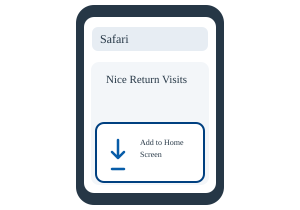
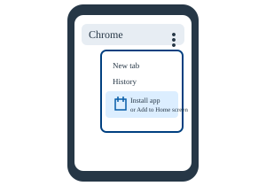
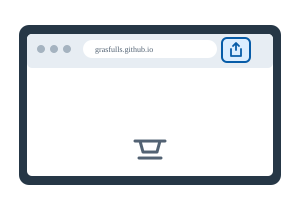

Use NRV in your browser
Choose Use NRV in this browser to continue in a browser tab. Use the same browser on the same device to return to this working copy.
Start here
Nice Return Visits (NRV) is a free app for keeping contact information and return-visit history organized. Open NRV to use it in your browser or add an app icon to your device.
Open NRVChoose how to use NRV
On your first visit in a browser, NRV asks whether to set up the app icon or use NRV in that browser.
Choose Use NRV in this browser to continue in a browser tab. Use the same browser on the same device to return to this working copy.
Choose Set up the app icon (recommended), follow the device instructions below, then open NRV from its new icon. Installed-app launches skip the browser-choice screen.
Install the app icon
Start by opening the NRV app page. Installation choices and labels vary by browser, device, and software version.



These illustrations are simplified guides, not exact screenshots. Browser controls and install availability can vary.
First use
After choosing a browser or opening NRV from the installed icon, follow the prompts to begin.
Before using a browser or installed-app copy, review and accept the current Terms of Use and Privacy & Data Notice. The agreement is shown for each copy until accepted there.
The first-use walkthrough offers bookmark guidance, then lets you choose Set up Defaults & Your Details or skip to Contacts. Setup includes a default country, state or province, and city. Your name and other details are optional, and Cities, Regions, and Areas can be added now or later.
When setup is complete, continue to Contacts and add a contact when ready. You can change defaults and Your Details later in Settings.
Before moving or resetting
Your working data is stored in the browser or installed-app copy you use. Optional Dropbox backups, exports, and sharing can place data elsewhere. Some map and address features use outside services; for example, an address lookup sends the entered location text to OpenStreetMap Nominatim when you choose the lookup action. Read the website's Privacy page for more information.
More guidance